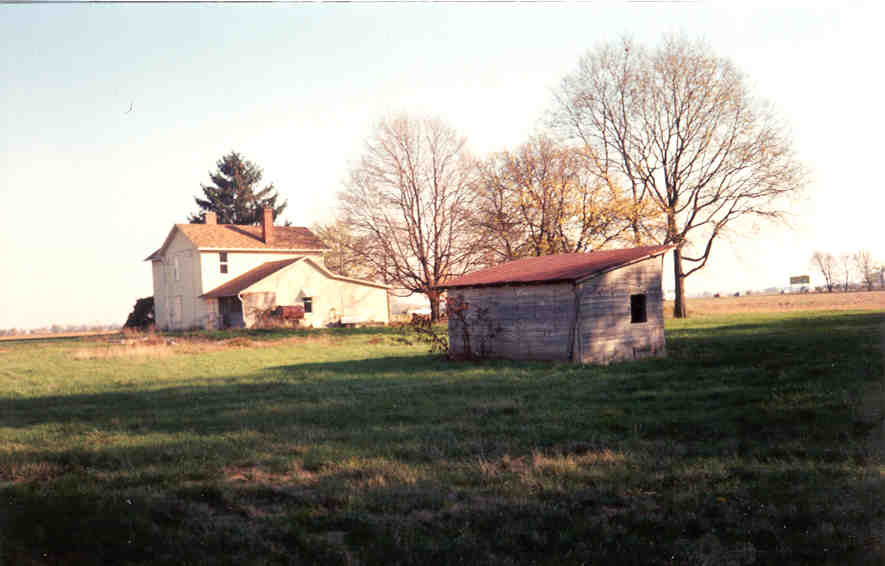
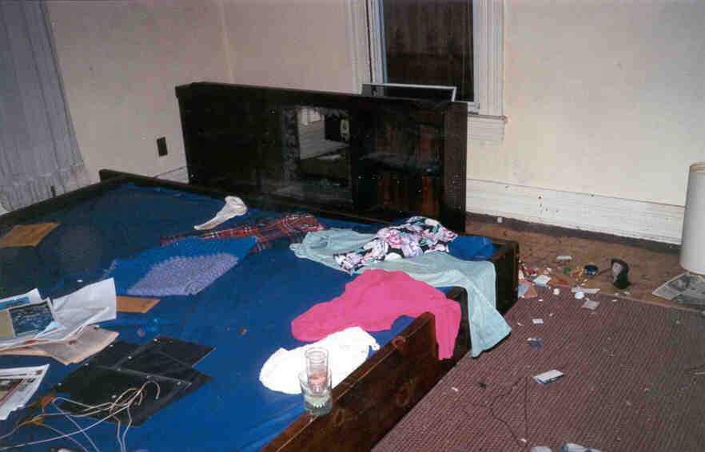
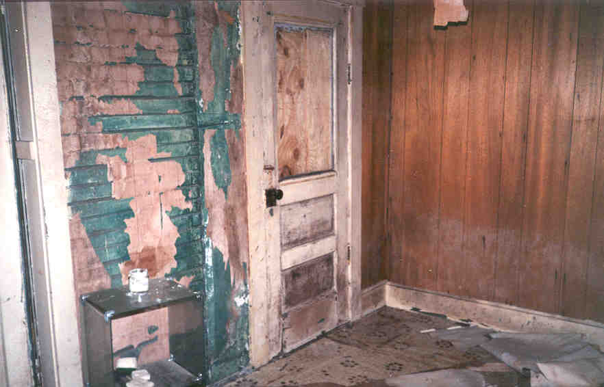
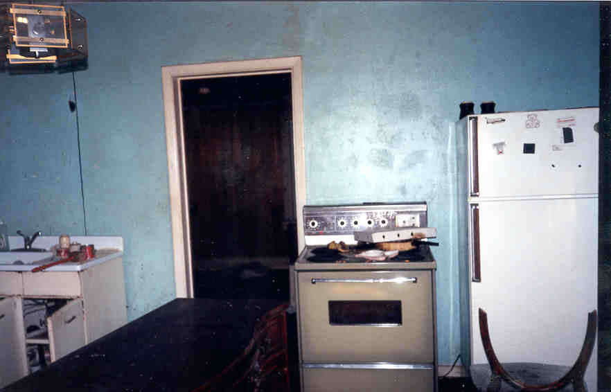
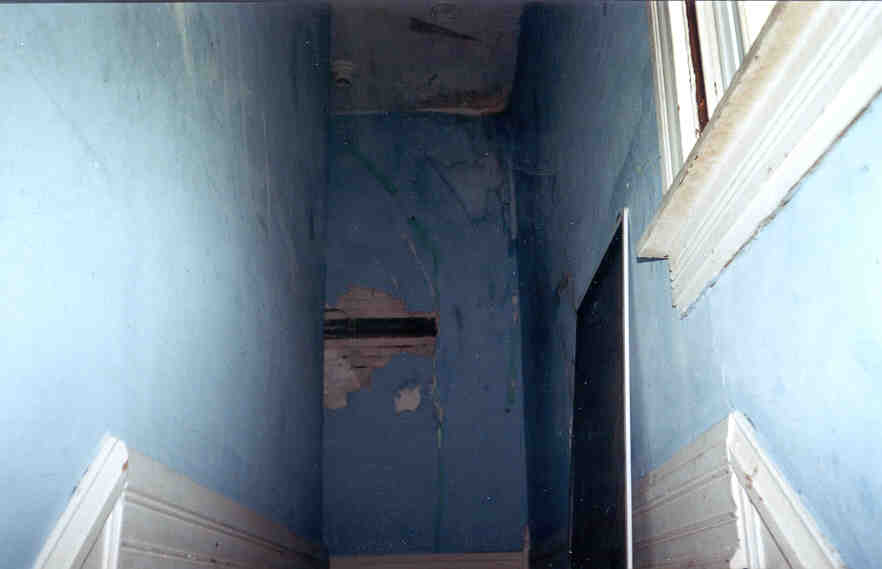
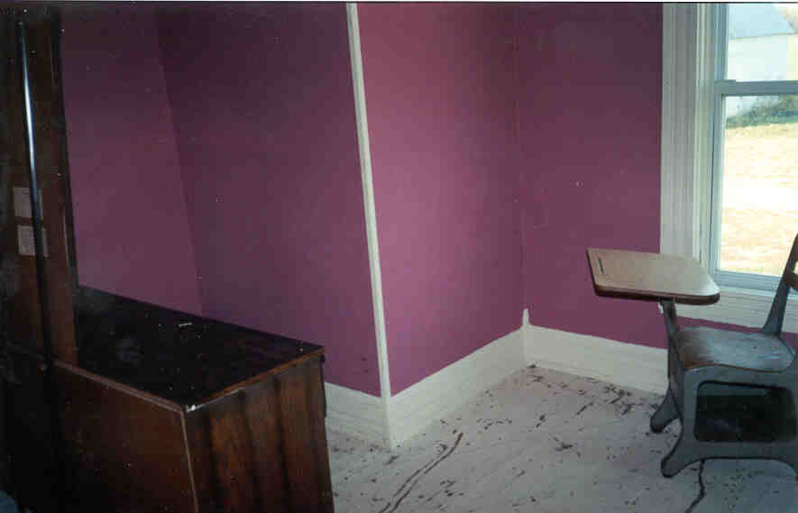
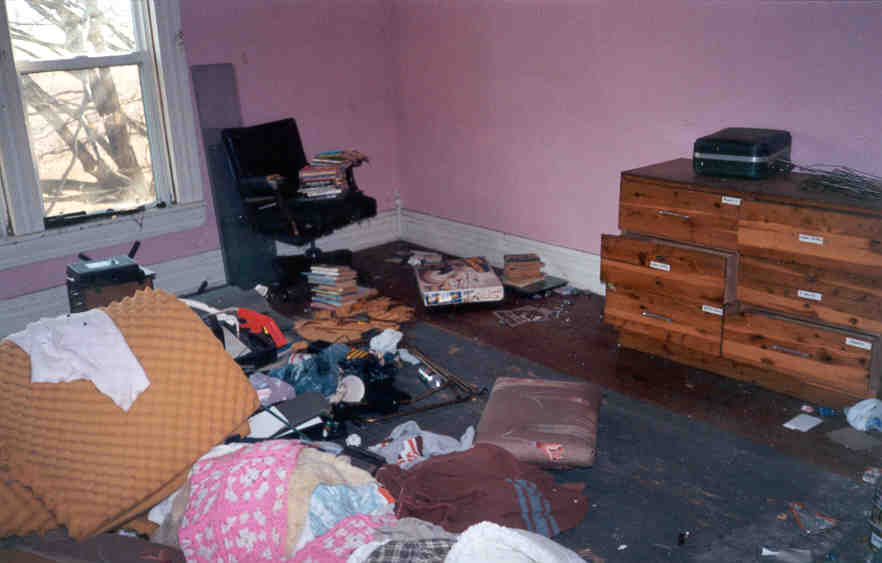

Located about three houses down from the big brick one above, this house was interesting because it was so full of junk. Recent junk, too. Mr. Rookie and I decided that the people had probably left some time in June 1998, based on magazines and a basketball collage in what was probably the son's room. Check out the still-full waterbed in the ground floor bedroom.







Different rooms, along with the bike selection in the shed.
Back